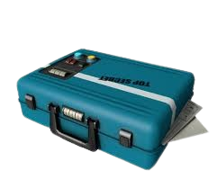
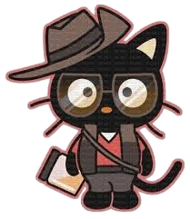

Team Fortress (a menudo abreviado como TF2) es una serie de videojuegos First Person Shooter basado en equipos. Empezó originalmente como un mod de Quake en 1996 y después fue creado como un juego propio en 1999 llamado Team Fortress Classic. Team Fortress 2 (el juego más recurrente y conocido) salió en 2007, innovando en varios aspectos en comparación a su antecesor, y a día de hoy sigue siendo muy popular y jugado por varias personas, teniendo constantes actualizaciones. La saga se ha expandido a una serie de cómics canónicos que exploran más a fondo la historia del juego y de sus personajes, los cuales pueden ser encontrados en la página oficial de Team Fortress 2 para leerlos libremente. Team Fortress también es conocido por sus personajes distintivos y su humor extremadamente atractivo y sin sentido. El juego también es una gran fuente de memes en Internet, y ha servido como inspiración para varios otros juegos del mismo género.


Principalmente por su estilo visual caricaturesco, su enfoque en el trabajo en equipo, su humor absurdo y su gran variedad de clases de personajes B).